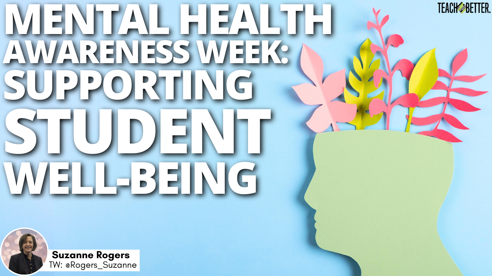

A safe space for international students to share their struggles, connect with others, and find support for mental health and well-being.

Our Mission
Our mission is to provide a supportive and welcoming community for international students in Southern California navigating the challenges of studying abroad. We aim to foster a space where students can openly discuss their mental health struggles, share experiences, and access resources to improve well-being. You are not alone—we are here to support each other.
Our Goals
- Provide Support & Community Engagement – Foster an online and offline community where international students in Southern California can share experiences and support one another.
- Offer Mental Health Resources – Provide access to mental health guides, counseling services, and self-help techniques tailored for international students.
- Raise Awareness – Educate students about the unique mental health challenges of studying abroad and ways to cope with stress, anxiety, and loneliness.
- Create Networking Opportunities – Connect students with alumni, mentors, and professionals who understand the struggles of studying in a foreign country.
- Promote Cultural Exchange – Encourage discussions about cultural differences, adapting to new environments, and embracing diversity.
Mental Health & Counseling Services
Below is a list of mental health and student support services available in Southern California.
| Service | Location | Contact | Availability |
|---|---|---|---|
| USC Student Counseling Services | University of Southern California | (213) 740-7711 | Mon-Fri: 8 AM - 5 PM |
| UCLA CAPS (Counseling & Psychological Services) | University of California, Los Angeles | (310) 825-0768 | Mon-Fri: 9 AM - 5 PM |
| San Diego State University Well-Being & Health Promotion | San Diego State University | (619) 594-5220 | Mon-Fri: 8 AM - 4:30 PM |
| LA County Mental Health Hotline | Los Angeles County | (800) 854-7771 | 24/7 |